Сайт вальдорфской школы «Ступені» — схема автоматизации
Дизайн-документ · редизайн и автоматизация · автор: Сергей Черныш · версия 0.2 · 06.10.2026
База проекта — реальная: локальная статическая копия текущего WordPress-сайта «Ступені» (вальдорфський ліцей і дитячий садок, Одеса) в папке
D:\Site\waldorf-stupeni-school-redesign(не git-репозиторий; копия снята 21.09.2026). Ссылки видаfile:///D:/...открывают файлы этой папки на вашем компьютере; ссылкиhttps://www.waldorf-stupeni.school/...— живые страницы. Все фрагменты кода, JSON и SQL ниже — пример / предлагаемая структура: нового кода пока нет. Предлагаемый технический стек — в разделе Технологический стек.
Оглавление
- Коротко о проекте
- Что есть сейчас: аудит текущего сайта
- Общая архитектура
- Матрица взаимодействия модулей
- 1. Публичный сайт (редизайн «Ступені»)
- 2. Админка
- 3. Электронный журнал + «Мрія»
- 4. Агент рекламы в соцсетях
- 5. Оркестратор
- Чек-лист обязательной информации (ст. 30 + НУШ)
- Сквозные сценарии
- Роли и права доступа
- Приватность и закон: общие правила
- Технологический стек
- План внедрения
- Глоссарий
Коротко о проекте
У «Ступенів» уже есть красивый сайт: живая шапка с цитатой Штайнера, «Ритм року» с праздниками, карусель учителей. Но он работает как витрина, застывшая в декабре 2023-го: последние новости — про Різдвяний ярмарок 2023 года, форма «Напишіть нам» в копии не отправляет письма, на сайте стоит noindex, nofollow (поисковики его почти не видят), а официального блока по ст. 30 Закона «Про освіту» нет. Мы делаем редизайн с автоматизацией из пяти модулей: публичный сайт — тот же дух, но с разделом «Інформаційна відкритість» и рабочими формами; админка — чтобы новости и документы обновляла сама школа; электронный журнал — вальдорфский слой (характеристики, эпохи) поверх государственной «Мрії», без двойного ввода; агент рекламы в соцсетях — для уже существующих Facebook, Instagram, YouTube и TikTok школы; и оркестратор — AI-агент, который раскладывает задачу директора по модулям, спрашивает подтверждение на рискованных шагах и пишет всё в журнал аудита.
Три правила, которые проходят через весь документ:
- Дети — не контент. Фото и имена учеников появляются публично только при действующем согласии родителя. Это касается и уже опубликованных фото — их нужно проверить (см. аудит).
- Один источник правды на каждый тип данных. Пользователи, роли и согласия — в админке; официальные оценки и посещаемость — там, где решит школа: в «Мрії» или в нашем журнале, но не в двух местах (см. 3.9 «Мрія»).
- Всё через API. Оркестратор пользуется тем же API, что и люди, с теми же правами.
Что есть сейчас: аудит текущего сайта
Источник — папка-зеркало D:\Site\waldorf-stupeni-school-redesign: её README.md, catalog.json (каталог из WP REST API: 17 страниц, 5 новостей, 75 медиафайлов), mirror-report.json (365 файлов скачано, 30 ошибок) и документ для администрации Informaciyna-vidkrytist-sajt-Stupeni.md (5 жовтня 2026; копия — dlya-administracii-informaciyna-vidkrytist.md). Визуальные свидетельства — скриншоты в screens и папке «Фото сайта» (D:\Фото сайта: 26 полностраничных скриншотов главной, внутренних страниц и мобильной версии; 2 точных дубля). Локальный просмотр: start.bat → npx serve -l 5180 . → http://127.0.0.1:5180/.
Технически
| Что | Где в папке | Комментарий |
|---|---|---|
| Главная страница | index.html | <meta name="robots" content="noindex,nofollow">, блоки: hero, «Чому вальдорфська школа?», «Структура школи», «Ритм року», «Наші вчителі та вихователі» (27 карточек), «Новини», «Наша школа», форма |
| Тема WordPress «Waldorf» (2023) | wp-content/themes/waldorf/style.css | ~2700 строк CSS: шрифты, «рваные» края блоков, цвета — основа для дизайн-системы редизайна |
| Карусели | flickity.pkgd.js, fullscreen.js, flickity.css | Flickity + полноэкранный просмотр — для «Ритм року», учителей и галереи; плюс jQuery 3.7 |
| Форма «Напишіть нам» | wp-content/plugins/contact-form-7/ | Contact Form 7 (wpcf7-f254-o1: ім'я, телефон, email, повідомлення) + reCAPTCHA. В статической копии не отправляет; на скриншотах виден бейдж reCAPTCHA с ошибкой ключа для localhost. Галочки согласия на обработку ПДн нет |
| Данные WP REST API | wp-json/index.html, wp-json/wp/v2/pages/, wp-json/wp/v2/posts/ | готовый источник для миграции контента в новую админку |
| Дубли URL | kindergarten/ и school-structure/kindergarten/ | одинаковые страницы ступеней по двум адресам (canonical стоит, но лучше 301-редиректы) |
| Ошибки зеркала | mirror-report.json | 28 из 30 ошибок — несуществующие пути …/r/ (артефакт относительной ссылки в теме), плюс oembed (400) и xmlrpc.php |
Разделы и контент
| Раздел | Живая страница | Файл в копии | Состояние |
|---|---|---|---|
| Головна | waldorf-stupeni.school | index.html | хорошая витрина; новости на главной — декабрь 2023 |
| Про нас | /about-us/ | about-us/index.html | ок |
| Вальдорфська педагогіка | /about-us/waldorf-pedagogy/ | about-us/waldorf-pedagogy/ | ок |
| Історія школи | /about-us/history/ | about-us/history/ | ок |
| Медіа в освітньому процесі | /about-us/media/ | about-us/media/ | «безгаджетний простір» — важно для тона соцсетей |
| Правила школи | /about-us/rules/ | about-us/rules/ | частично закрывает «правила поведінки» (ст. 30); упоминает семестровую атестацию — пригодится журналу |
| Методичні матеріали | /about-us/methodical-materials/ | about-us/methodical-materials/ | почти пустая страница |
| Структура школи | /school-structure/ | school-structure/ | дублирует тексты главной и страниц ступеней (см. §7 документа для администрации) |
| Дитячий садочок | /school-structure/kindergarten/ | school-structure/kindergarten/ | ок |
| Початкова / Середня / Старша школа | /elementary-school/, /secondary-school/, /high-school/ | elementary-school/, secondary-school/, high-school/ | ок, нет правил прийому и вартості |
| Корекційно-лікувальний блок | /correctional-treatment-block/ | correctional-treatment-block/ | описание есть, «умов доступності для осіб з ООП» как документа — нет |
| Семінар | /seminar/ | seminar/ | подготовка учителей — потенциальная «додаткова послуга» |
| Новини | /news/ | news/index.html | 5 записей, все 8–16 грудня 2023, напр. Різдвяний ярмарок 16 грудня, А ваші діти читають? |
| Контакти | /contacts/ | contacts/index.html | адрес, телефоны (офіс, бухгалтерія, вахта), 2 email, соцсети |
| Допомогти нам | /help-us/ | help-us/index.html | «Коло друзів» — сбор поддержки; нет онлайн-оплаты и отчёта о благотворительной помощи |
Как сейчас: скриншоты
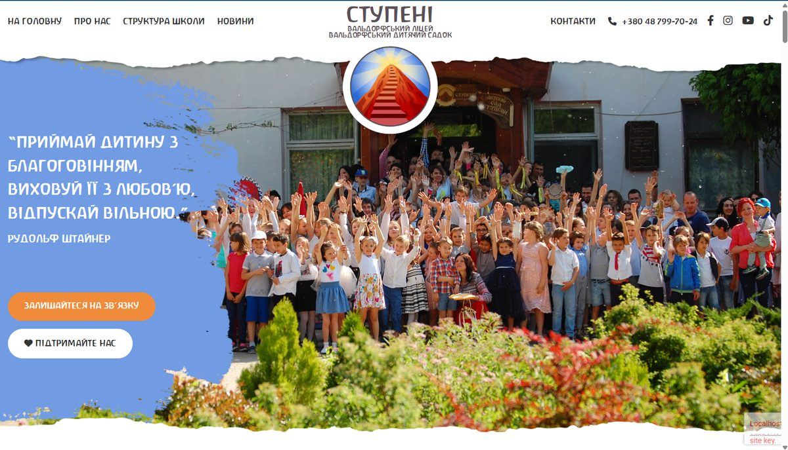
Как сейчас — hero: цитата Штайнера, кнопки «Залишайтеся на зв'язку» и «Підтримайте нас», меню НА ГОЛОВНУ · ПРО НАС · СТРУКТУРА ШКОЛИ · НОВИНИ · КОНТАКТИ, соцсети FB/IG/YouTube/TikTok. На фото — десятки узнаваемых детей: нужна проверка согласий.
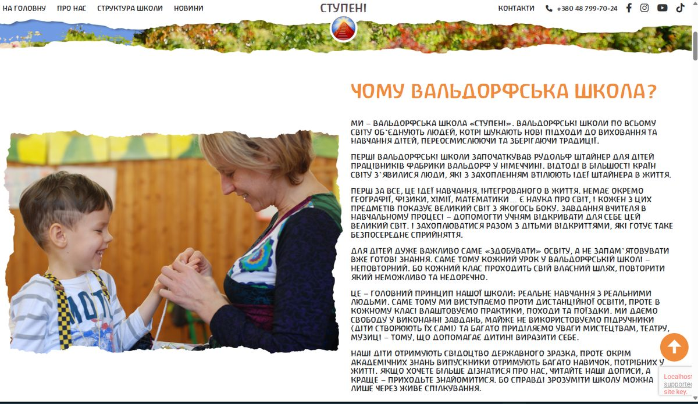
Как сейчас — «Чому вальдорфська школа?»: в тексте «ми виступаємо проти дистанційної освіти». Это позиция школы, но по ст. 30 на сайте должна быть понятная информация о формах здобуття освіти — формулировку надо согласовать.
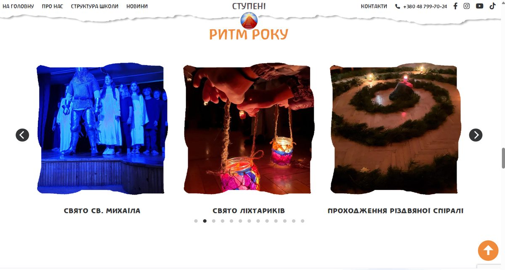
Как сейчас — карусель «Ритм року» (Свято врожаю, св. Михаїла, ліхтариків, різдвяна спіраль…): готовый календарь поводов для агента соцсетей.
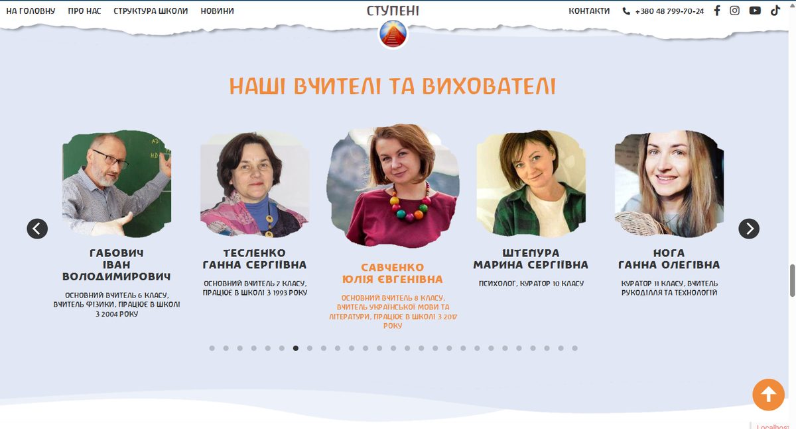
Как сейчас — «Наші вчителі та вихователі»: 27 карточек с ролями и стажем. Частично покрывает «кадровий склад», но не в формате ліцензійних умов.
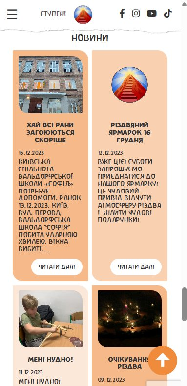
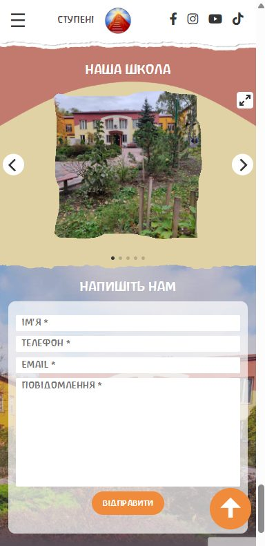
Мобильная версия — слева: «Новини» с датами 16.12.2023, 12.12.2023, 11.12.2023 (устарели почти на три года); справа: форма «Напишіть нам» без галочки согласия на обработку ПДн.
Внутренние страницы (из папки «Фото сайта»):
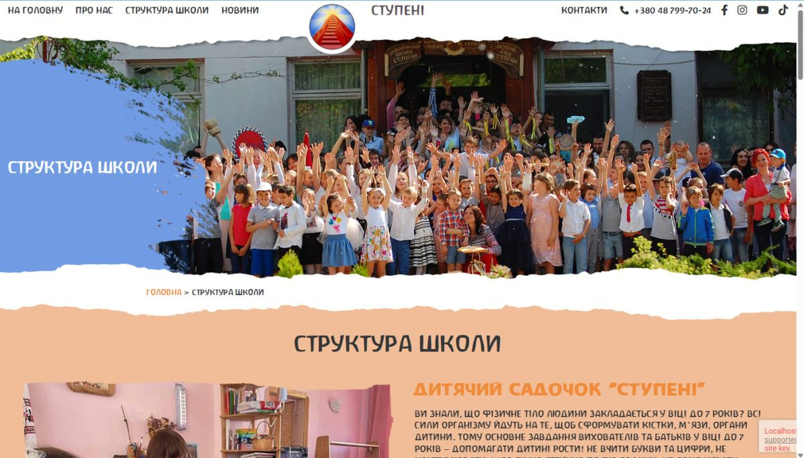
Как сейчас — «Структура школи»: тот же групповой снимок детей, что и на главной, хлебные крошки, далее — повтор текстов ступеней с главной (дублирование из §7 документа для администрации). В углу — бейдж reCAPTCHA с ошибкой ключа.
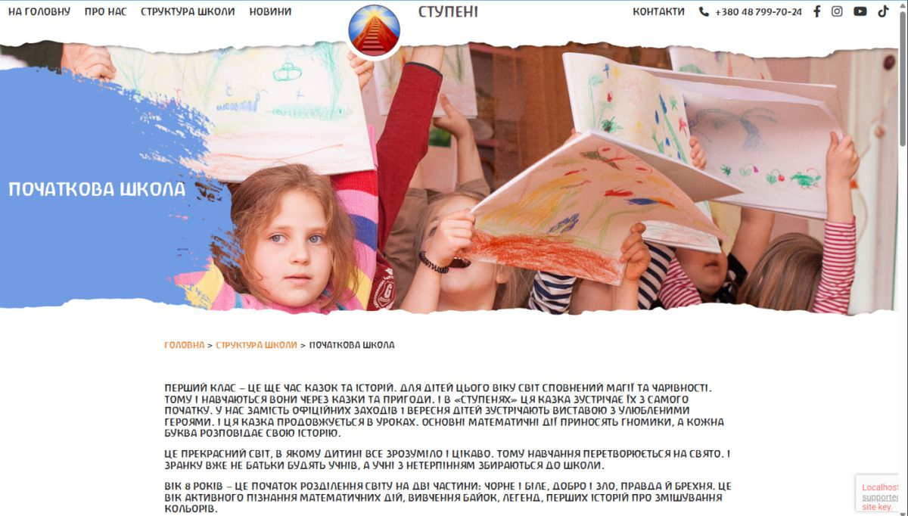
Как сейчас — «Початкова школа»: крупный план лица ребёнка в шапке страницы. Красиво, но это ровно тот случай, где нужен photo_site в реестре согласий. Ни правил прийому, ни вартості, ни кнопки «Записатися на екскурсію» на странице нет.
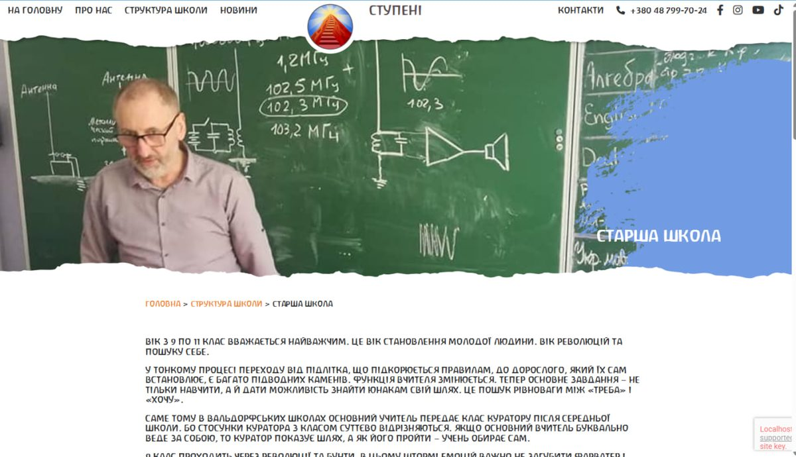
Как сейчас — «Старша школа»: живое фото урока, текст о переходе от основного учителя к куратору. Шаблон внутренней страницы (шапка + крошки + текст) хорошо подходит для новых страниц «Вступ» и «Інформаційна відкритість».
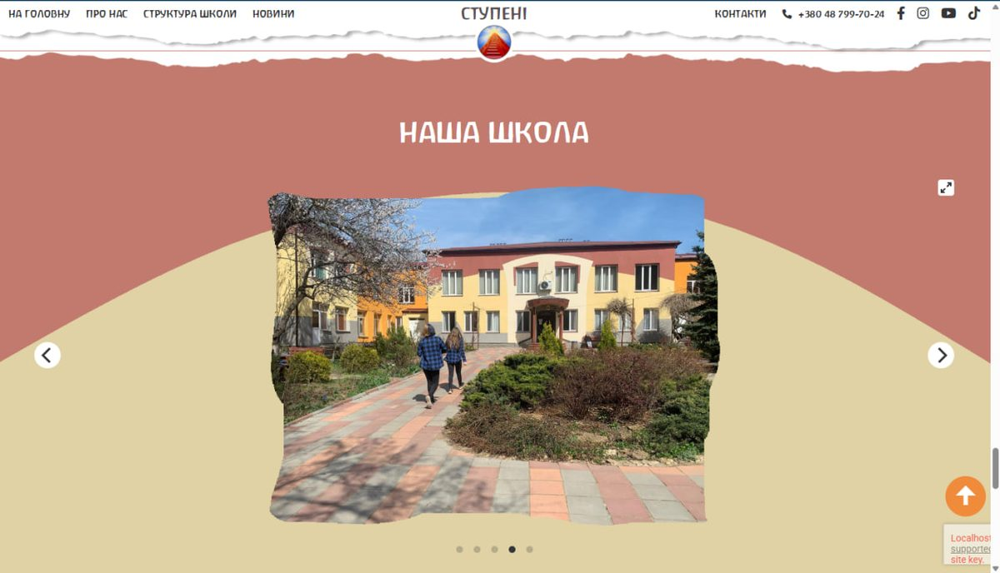
Как сейчас — галерея «Наша школа» на главной (Flickity с полноэкранным режимом): фото здания и двора — безопасный тип контента для соцсетей.
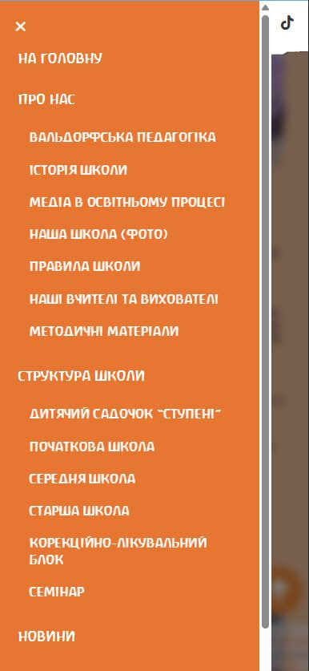
Как сейчас — мобильное меню: вся текущая структура сайта; пунктов «Вступ», «Для батьків», «Інформаційна відкритість» нет.
Главные пробелы
- Нет раздела «Інформаційна відкритість» — статут, ліцензії, правила прийому, вартість, булінг, форми навчання (см. чек-лист).
- Новости не обновляются с декабря 2023 — нужна простая админка и агент соцсетей, который подсказывает поводы.
- Форма не работает без PHP и не спрашивает согласия — заменить на
POST /api/public/leads(1.11). noindex, nofollow— при запуске редизайна снять, добавить sitemap и 301 с дублей.- Фото детей без учёта согласий — 75 медиа из
catalog.jsonпрогнать через реестр согласий (2.6). - «Методичні матеріали» пусты, «Структура школи» дублирует главную.
Общая архитектура
Пять модулей поверх общего ядра: сервис авторизации (JWT), база данных, очередь событий (outbox) и хранилище файлов. Два внешних «соседа» важнее остальных: текущий WordPress (источник миграции контента) и государственная «Мрія» (официальный электронный журнал/дневник).
flowchart LR
subgraph People["Люди"]
P1["Родители и будущие семьи"]
P2["Учителя и вихователі"]
P3["Администрация и директор"]
end
subgraph Modules["Модули"]
M1["1. Публичный сайт (редизайн)"]
M2["2. Админка"]
M3["3. Электронный журнал"]
M4["4. Агент соцсетей"]
M5["5. Оркестратор"]
end
subgraph Core["Общее ядро"]
AUTH["Auth-сервис (JWT)"]
DB[("PostgreSQL")]
BUS["Очередь событий / outbox"]
FILES[("Файлы и PDF")]
AUDIT[("Журнал аудита")]
end
subgraph External["Внешние системы"]
WP["Текущий WordPress: wp-json, catalog.json"]
MRIIA["Мрія (Мінцифри, ДП Дія)"]
SOC["Facebook, Instagram, YouTube, TikTok, Telegram"]
MSG["Email, Viber, Telegram-бот"]
LLM["LLM-провайдер"]
end
P1 --> M1
P2 --> M2
P2 --> MRIIA
P3 --> M2
P3 --> M5
WP -- "разовая миграция" --> M2
M2 -- "контент, документы ст. 30" --> M1
M1 -- "заявки" --> M2
M2 --- M3
M3 <-->|"синхронизация (вариант Б) или экспорт (уточнить)"| MRIIA
MRIIA -- "оценки, пропуски, уведомления" --> P1
M4 -- "посты" --> SOC
SOC -- "UTM-переходы, лид-формы" --> M1
M4 -- "лиды" --> M2
M5 -- "tool calls" --> M1
M5 -- "tool calls" --> M2
M5 -- "tool calls" --> M3
M5 -- "tool calls" --> M4
M5 --> LLM
M3 --> MSG
MSG --> P1
M2 --> AUTH
M3 --> AUTH
M5 --> AUTH
M2 --> DB
M3 --> DB
M2 --> FILES
M4 --> BUS
M3 --> BUS
M5 --> AUDIT
M2 --> AUDIT
Как читать: стрелки — направление данных. Оркестратор никогда не ходит в базу или в «Мрію» напрямую — только через инструменты (tool registry) поверх API модулей.
Матрица взаимодействия модулей
Строка — кто отправляет, столбец — кому. Каждая ячейка ведёт к разделу, где связь описана подробно.
| Отправитель ↓ / Получатель → | 1. Сайт | 2. Админка | 3. Журнал | 4. Соцсети | 5. Оркестратор |
|---|---|---|---|---|---|
| 1. Сайт | — | заявки, лиды с UTM, подписки | вход родителя → кабинет ребёнка | UTM-аналитика переходов | статус публикации |
| 2. Админка | новости, страницы, документы ст. 30 | — | ученики, классы, роли, согласия | согласия на фото, бренд-гайд, события | права, задачи на одобрение |
| 3. Журнал | кабинет родителя, ссылка на «Мрію» | отчёты, сигналы «долгое отсутствие» | — | ничего — данные учеников в соцсети не уходят | сводки, статус синхронизации с «Мрією» |
| 4. Соцсети | посты со ссылками на новость/лендинг | лиды, черновики, метрики | — | — | статусы публикаций, метрики |
| 5. Оркестратор | новость, страница события | черновики, задачи, follow-up, проверка ст. 30 | чтение сводок; запись — только с подтверждением | кампания: черновики постов | — |
1. Публичный сайт (редизайн «Ступені»)
1.1 Назначение
Лицо школы — редизайн существующего сайта, а не новый с нуля. Сохраняем то, за что сайт любят (тёплая тема «Waldorf», «Ритм року», учителя, тексты о педагогике), и добавляем то, чего не хватает: официальный раздел по ст. 30, живые новости, рабочую форму заявки с согласием, кабинет родителя и индексацию в поиске.
1.2 Что есть сейчас
Подробно — в аудите. Какие страницы есть (подтверждено копией сайта, catalog.json и скриншотами из папки «Фото сайта»):
| Группа | Страницы (17 + 5 новостей) | Скриншот есть |
|---|---|---|
| Головна | hero, «Чому вальдорфська школа?», «Структура школи», «Ритм року», «Наші вчителі та вихователі», «Новини», «Наша школа», «Напишіть нам» | да, десктоп и мобильная версия |
| Про нас | Вальдорфська педагогіка, Історія школи, Медіа в освітньому процесі, Правила школи, Методичні матеріали (+ якоря «Наша школа (фото)», «Наші вчителі») | меню |
| Структура школи | обзор + Дитячий садочок «Ступені», Початкова, Середня, Старша школа, Корекційно-лікувальний блок, Семінар | да, десктоп (садочок, початкова, середня, старша) и мобильная версия |
| Новини | 5 записей 8–16.12.2023 | карточки на главной |
| Прочее | Контакти, Допомогти нам | форма — мобильная версия |
Коротко о технике: 17 страниц и 5 новостей (catalog.json), главная index.html с блоками hero → «Чому вальдорфська школа?» → «Структура школи» → «Ритм року» → учителя → «Новини» → «Наша школа» → «Напишіть нам»; тема style.css; форма на Contact Form 7; noindex, nofollow.
1.3 Чего не хватает
- Раздела «Інформаційна відкритість» (документы, вступ і вартість, булінг, харчування) — полный список в чек-листе.
- Актуальных новостей и календаря событий (последняя новость — 16.12.2023).
- Работающей формы, автоответа и учёта заявок (лиды).
- Согласия на обработку ПДн в форме и cookie-баннера.
- Закрытого раздела для родителей (сейчас всё общение — в мессенджерах).
- SEO: снять
noindex, sitemap, 301 с дублей (/kindergarten/→/school-structure/kindergarten/), убрать битые…/r/.
1.4 Что добавить: новая карта сайта
Главную по рекомендации документа для администрации оставляем витриной; «Структура школи» становится навигационным обзором (карточки + ссылки), полные тексты — только на страницах ступеней.
flowchart TD
HOME["Головна (витрина, как сейчас)"]
HOME --> ABOUT["Про нас"]
HOME --> STR["Структура школи (обзор-карточки)"]
HOME --> NEWS["Новини + Події (календар)"]
HOME --> OPEN["NEW: Інформаційна відкритість"]
HOME --> ADM["NEW: Вступ (правила прийому, вартість, заявка)"]
HOME --> PAR["NEW: Для батьків (вхід)"]
HOME --> HELP["Допомогти нам + звіт про допомогу"]
HOME --> CONT["Контакти"]
ABOUT --> A1["Вальдорфська педагогіка"]
ABOUT --> A2["Історія школи"]
ABOUT --> A3["Медіа в освітньому процесі"]
ABOUT --> A4["Правила школи"]
ABOUT --> A5["Методичні матеріали (наповнити)"]
STR --> S1["Дитячий садочок"]
STR --> S2["Початкова школа"]
STR --> S3["Середня школа"]
STR --> S4["Старша школа"]
STR --> S5["Корекційно-лікувальний блок"]
STR --> S6["Семінар"]
OPEN --> O1["Документи закладу"]
OPEN --> O2["Управління та кадри"]
OPEN --> O3["Освітній процес і форми навчання"]
OPEN --> O4["Безпека та інклюзія (булінг, ООП)"]
OPEN --> O5["Звітність"]
OPEN --> O6["Харчування"]
PAR --> P1["Розклад, оголошення класу"]
PAR --> P2["Характеристики, посилання на Мрію"]
1.5 Раздел «Інформаційна відкритість»
Структура — из документа для администрации (§4): 7 подразделов, каждый документ — PDF с датой обновления и ответственным. Документы живут в реестре официальных документов админки, сайт только показывает их. Соответствие требованиям — в чек-листе.
1.6 Пользователи и роли
| Роль | Что видит |
|---|---|
| Гость (будущие семьи) | всё публичное: педагогика, ступени, «Ритм року», новости, «Інформаційна відкритість», «Вступ», форма заявки |
| Родитель (вошёл) | «Для батьків»: объявления класса, расписание, опубликованные характеристики, ссылка в «Мрію» (журнал) |
| Друг школы / донор | «Допомогти нам», отчёт о полученной помощи |
1.7 Входные и выходные данные
Вход: контент и документы из админки (на старте — мигрированные из wp-json/wp/v2/pages/ и posts/); данные ребёнка из журнала — только своему родителю; UTM из ссылок соцсетей.
Выход: лиды (экскурсия, день открытых дверей, вопрос, запись в садочок) с UTM; подписки (double opt-in); агрегированная аналитика без идентификаторов до согласия на cookies.
1.8 Связи с другими модулями
- → Админка: лиды и подписки — в таблицу лидов.
- ← Админка: весь контент и документы ст. 30; сайт хранит только кэш.
- ← Журнал: кабинет родителя (только чтение, только свой ребёнок) + deep-link в «Мрію».
- ← Соцсети: трафик с UTM на лендинги кампаний.
- ← Оркестратор: публикует через API админки, не напрямую.
1.9 Шаги автоматизации
- Триггер: запуск миграции → скрипт читает catalog.json и
wp-json→ создаёт страницы, новости и медиа в админке со старыми slug (/about-us/history/и т. д.) → медиа с детьми получают статус «согласие не проверено» и не публикуются до проверки. - Триггер:
content.published→ сброс кэша, пересборка sitemap, пинг поисковиков (после снятияnoindex). - Триггер: дата
publishAt→ отложенная публикация. - Триггер: отправка формы → валидация, капча, проверка галочки согласия на ПДн → лид с UTM →
lead.created→ автоответ семье. - Триггер: новостей нет 30 дней → напоминание редактору и подсказка от агента соцсетей по ближайшему празднику из «Ритм року».
- Триггер: документ ст. 30 изменён в админке → страница «Інформаційна відкритість» обновляется, дата обновления меняется автоматически.
- Триггер: вход родителя → JWT с ролью
ParentиchildIds→ кабинет.
1.10 Схема: путь семьи
flowchart TD
G["Гость приходит с Instagram waldorf.stupeni по UTM-ссылке"] --> L["Лендинг события или Головна"]
L --> O["Смотрит Вступ: правила прийому, вартість"]
O --> F{"Заполнил форму?"}
F -- "нет" --> N["Читает Ритм року, новости"]
F -- "да" --> C{"Галочка согласия на ПДн?"}
C -- "нет" --> E["Форма не отправляется, подсказка"]
C -- "да" --> LEAD["Лид: имя, контакт, возраст ребёнка, ступень, UTM"]
LEAD --> ADM["Админка: таблица лидов"]
LEAD --> AUTO["Автоответ семье"]
P["Родитель входит"] --> JWT["JWT: роль Parent, childIds"]
JWT --> CAB["Кабинет: характеристики, объявления, ссылка в Мрію"]
1.11 Ключевые сущности и API (пример / предлагаемая структура)
httpGET /api/public/pages/{slug} # about-us/history, school-structure/kindergarten …
GET /api/public/news?page=1
GET /api/public/events?from=2026-10-01&to=2026-12-31
GET /api/public/openness # дерево раздела «Інформаційна відкритість»
POST /api/public/leads # замена Contact Form 7 (wpcf7-f254-o1)
POST /api/public/subscriptions
GET /api/parent/children/{childId}/summary
json// POST /api/public/leads — пример (поля как в текущей форме + согласие и UTM)
{
"name": "Олена",
"phone": "+380501234567",
"email": "olena@example.com",
"message": "Хочемо на екскурсію, донька 6 років",
"stage": "elementary-school",
"consentPersonalData": true,
"utm": { "source": "instagram", "medium": "social", "campaign": "yarmarok-2026", "content": "post-7f3a" }
}
1.12 Риски
- Уже опубликованные фото детей (hero, «Наша школа», новости) — без реестра согласий. Перед снятием
noindex— ревизия всех 75 медиа. - Снятие
noindexоткроет и старое. Сначала обновить/архивировать новости 2023 года, потом индексировать. - Поломка ссылок. Сохранить slug из WordPress, 301 с дублей.
- Лишние данные в форме — не спрашиваем ФИО и дату рождения ребёнка; хватает возраста.
- Позиция «против дистанционки» vs ст. 30. Формулировку о формах обучения согласовать с юристом (чек-лист).
2. Админка
2.1 Назначение
Рабочее место команды школы, которое заменяет wp-admin: контент сайта, реестр официальных документов ст. 30, пользователи и роли, ученики и классы, согласия, лиды, очередь одобрений. Это источник правды для остальных модулей. Журнал — её подмодуль (/admin/journal/*).
2.2 Пользователи и роли
Директор, администратор (секретарь), бухгалтерия (документы о плате и помощи), классный (основний) учитель, учитель-предметник и куратор старших классов, вихователь садочка, SMM, приёмная комиссия. Полная таблица — в Ролях и правах.
2.3 Входные данные
- Мигрированный контент WordPress (catalog.json, wp-json).
- Тексты, фото, события от сотрудников; черновики от оркестратора и агента соцсетей.
- PDF официальных документов (статут, ліцензії, правила прийому, документы о булинге…) — по списку §6 документа для администрации.
- Лиды с сайта и из соцсетей; согласия родителей.
2.4 Выходные данные
- Контент и документы → сайт.
- Пользователи, роли, связи «родитель — ребёнок — класс» → журнал, Auth.
- Реестр согласий → агент соцсетей, галерея сайта.
- Решения approve/reject → оркестратор, агент соцсетей.
2.5 Связи с другими модулями
- Сайт: публикует контент и раздел «Інформаційна відкритість», принимает лиды.
- Журнал: общий каркас (меню, роли, пользователи).
- Соцсети: очередь черновиков, CRM лидов, реестр согласий.
- Оркестратор: очередь HITL, журнал аудита, проверка свежести документов.
2.6 Реестр официальных документов (ст. 30)
Каждый пункт чек-листа — запись в реестре: requirement_code, файл PDF, дата утверждения, дата публикации, ответственный, «применимо к частной школе: да / нет / уточнить». Правило из ст. 30: публиковать не позднее 10 рабочих дней после утверждения или изменения — админка считает срок и напоминает.
2.7 Шаги автоматизации
- Триггер: миграция WordPress → импорт 17 страниц, 5 новостей, 75 медиа; для каждого медиа — задача «отметить детей на фото / подтвердить, что детей нет».
- Триггер: импорт CSV учеников → профили учеников и родителей → приглашения родителям.
- Триггер: согласие подписано / отозвано → реестр согласий; при
consent.revoked— снять фото с сайта, задача SMM удалить из соцсетей. - Триггер: документ ст. 30 утверждён → таймер 10 рабочих дней → напоминания ответственному на 5-й и 8-й день → эскалация директору.
- Триггер: раз в квартал → отчёт «что в реестре устарело или пусто» (для директора и оркестратора).
- Триггер: новый лид → ответственный по ступени (садочок / школа) → SLA 48 ч.
- Триггер: черновик от агента или оркестратора → карточка в «Очереди одобрения».
- Триггер: изменение ролей, согласий, документов → журнал аудита.
2.8 Схема
flowchart LR
WP["WordPress: catalog.json, wp-json"] -- "миграция" --> CMS
subgraph Admin["Админка /admin"]
CMS["Контент: страницы, новости, события"]
DOCS["Реестр документов ст. 30"]
USERS["Пользователи и роли"]
PEOPLE["Ученики, классы, родители"]
CONS["Реестр согласий"]
CRM["Лиды (CRM)"]
Q["Очередь одобрения"]
J["Журнал /admin/journal"]
end
CMS -- "content.published" --> SITE["Сайт"]
DOCS -- "Інформаційна відкритість" --> SITE
USERS --> AUTH["Auth-сервис"]
PEOPLE --> J
CONS --> SOC["Агент соцсетей"]
CONS --> SITE
SOC -- "черновики" --> Q
ORCH["Оркестратор"] -- "черновики, задачи" --> Q
Q -- "approve" --> SOC
Q -- "approve" --> CMS
SITE -- "лиды" --> CRM
SOC -- "лиды" --> CRM
2.9 Ключевые сущности и API (пример / предлагаемая структура)
httpPOST /api/admin/import/wordpress # источник: catalog.json + wp-json
POST /api/admin/news # черновик
POST /api/admin/news/{id}/publish
GET /api/admin/official-docs?status=missing
POST /api/admin/official-docs # { requirementCode, file, approvedAt, ownerId }
POST /api/admin/consents
POST /api/admin/consents/{id}/revoke
GET /api/admin/leads?status=new
PATCH /api/admin/leads/{id}
GET /api/admin/approvals?status=pending
POST /api/admin/approvals/{id}/decision
sql-- пример / предлагаемая структура
CREATE TABLE official_docs (
id uuid PRIMARY KEY,
requirement_code text NOT NULL, -- 'statut', 'license', 'admission_rules', 'tuition_fee', 'bullying_plan' …
applies_private text NOT NULL, -- 'yes' | 'no' | 'clarify'
file_id uuid REFERENCES files(id),
approved_at date,
published_at date,
owner_id uuid REFERENCES staff(id),
due_at date GENERATED ALWAYS AS (approved_at + 14) STORED -- ≈10 рабочих дней, точный расчёт — в коде
);
CREATE TABLE consents (
id uuid PRIMARY KEY, student_id uuid NOT NULL, guardian_id uuid NOT NULL,
kind text NOT NULL, -- photo_site | photo_social | name_public | personal_data
text_version text NOT NULL, granted_at timestamptz NOT NULL,
expires_at timestamptz, revoked_at timestamptz
);
CREATE TABLE leads (
id uuid PRIMARY KEY, created_at timestamptz NOT NULL DEFAULT now(),
source text NOT NULL, -- site_form | meta_lead_ads | telegram_bot
stage text, -- kindergarten | elementary-school | …
utm_source text, utm_medium text, utm_campaign text, utm_content text,
name text NOT NULL, phone text, email text, child_age int,
status text NOT NULL DEFAULT 'new', owner_id uuid, consent_pd boolean NOT NULL
);
2.10 Риски
- Избыточные права — учитель видит только свои классы; экспорт списков — с записью в аудит.
- Документы опубликованы и забыты — реестр с датами и ответственными (§6 п. 10 документа для администрации).
- Утечка через импорт — CSV и выгрузки удаляются через 24 ч.
- Миграция перенесёт старые фото без согласий — по умолчанию они скрыты.
3. Электронный журнал + «Мрія»
3.1 Назначение
Учёт успеваемости, посещаемости и расписания с вальдорфской спецификой. Оценивание бывает двух видов, журнал поддерживает оба:
- Описательная характеристика — текст о развитии ребёнка за эпоху, семестр или год (в младших классах — основная форма, созвучно вербальному оцениванию НУШ в 1–4 классах). Годовая характеристика может включать персональное изречение для ребёнка.
- Баллы — 12-балльная шкала там, где она нужна (средняя и старшая школа, семестровая атестація — она упомянута в Правилах школи).
Главное отличие от версии 0.1: в Украине уже есть государственная экосистема «Мрія», поэтому журнал строится вокруг неё, а не вместо неё — см. 3.9.
3.2 Пользователи и роли
| Роль | Права |
|---|---|
| Основний (классный) учитель | свой класс: эпохи, характеристики; посещаемость — там, где мастер-система (3.9) |
| Учитель-предметник, куратор 9–11 | свои предметы и группы: оценки, комментарии |
| Вихователь садочка | посещаемость и «день вихованця» (в «Мрії» для ЗДО — пилот) |
| Администрация | сводки, расписание, закрытие периода, решение по интеграции с «Мрією» |
| Родитель | чтение по своему ребёнку: характеристики — у нас, официальные оценки и пропуски — в «Мрії» (или у нас при варианте Б) |
3.3 Входные данные
- Ученики, классы, связи с родителями — из админки.
- Расписание: сетка уроков + блоки эпох (основний урок 1 год 45 хв, несколько недель на тему — как описано на странице Середня школа).
- Тексты характеристик, баллы, отметки посещаемости — один раз, в мастер-системе.
3.4 Выходные данные
- Кабинет родителя на сайте: опубликованные характеристики, эпохи, объявления + deep-link в «Мрію».
- Сводки для администрации и оркестратора (агрегаты).
- Печатная годовая характеристика (PDF).
- Официальные данные — в «Мрії» (вариант А — вводятся там; вариант Б — синхронизируются от нас).
3.5 Связи с другими модулями
- ← Админка: профили, роли, классы.
- → Сайт: кабинет родителя (только чтение).
- ↔ «Мрія» (внешняя): см. 3.9.
- → Оркестратор: чтение сводок; запись — только с подтверждением (HITL).
- ✕ Соцсети: связи нет намеренно.
3.6 Шаги автоматизации
- Триггер: начало урока → учитель отмечает только исключения (опоздал / отсутствует) — в мастер-системе посещаемости (вариант А — «Мрія», вариант Б — наш журнал).
- Триггер:
attendance.marked(вариант Б) → через 30 минут (окно для исправления) уведомление родителю; в варианте А уведомление отправляет сама «Мрія» — мы не дублируем. - Триггер: 3 дня отсутствия подряд → сигнал основному учителю и администрации (вариант А — по импортированному снимку, если экспорт доступен — уточнить).
- Триггер: конец эпохи → напоминание написать характеристику; автосохранение черновика.
- Триггер: «Опубликовать характеристику» → уведомление родителю (без текста в самом уведомлении).
- Триггер: изменение расписания → уведомление и обновление на сайте.
- Триггер: закрытие семестра → записи блокируются; исправления — с причиной и аудитом.
- Триггер: ночная синхронизация (вариант Б) → отправка изменений в «Мрію», сверка, отчёт о расхождениях.
3.7 Схема данных
erDiagram
SCHOOL_CLASS ||--o{ STUDENT : "учится"
STUDENT }o--o{ GUARDIAN : "родитель"
SCHOOL_CLASS ||--o{ LESSON : "расписание"
SUBJECT ||--o{ LESSON : "предмет"
STAFF ||--o{ LESSON : "ведёт"
SCHOOL_CLASS ||--o{ EPOCH : "эпохи"
LESSON ||--o{ ATTENDANCE : "отметки"
STUDENT ||--o{ ATTENDANCE : "присутствие"
STUDENT ||--o{ ASSESSMENT : "оценивание"
EPOCH ||--o{ ASSESSMENT : "за эпоху"
STUDENT ||--o| MRIIA_LINK : "сопоставление"
ASSESSMENT {
uuid id
string kind "numeric или descriptive"
int score "1-12, если numeric"
text characteristic "текст, если descriptive"
string status "draft или published"
string masterSystem "local или mriia"
}
ATTENDANCE {
uuid id
string status "present absent late excused"
datetime markedAt
string source "local или mriia_import"
}
EPOCH {
uuid id
string topic "например, Давня Греція"
date startsOn
date endsOn
}
MRIIA_LINK {
uuid studentId
string externalRef "идентификатор в ОІС, уточнить"
datetime lastSyncAt
}
3.8 Ключевые сущности и API (пример / предлагаемая структура)
httpGET /api/journal/classes/{classId}/timetable?week=2026-W41
POST /api/journal/lessons/{lessonId}/attendance # только если мастер = local (вариант Б)
POST /api/journal/assessments # descriptive всегда у нас; numeric — по варианту
POST /api/journal/assessments/{id}/publish
GET /api/journal/reports/attendance?classId=...&period=2026-S1
GET /api/journal/mriia/status # режим (A/B), последняя синхронизация, расхождения
POST /api/journal/mriia/import # загрузка экспорта, если он доступен (уточнить)
json// POST /api/journal/assessments — характеристика за эпоху (пример)
{
"studentId": "8c1e…",
"epochId": "ancient-greece-5-2026",
"kind": "descriptive",
"characteristic": "Марко з захопленням готувався до давньогрецької Олімпіади…",
"status": "draft",
"masterSystem": "local"
}
3.9 Интеграция с «Мрією»: без двойного ввода
Что известно (проверено 06.10.2026):
- «Мрія» — государственная освітня екосистема (Мінцифри + МОН): электронные журналы и дневники, расписание, оценки, пропуски, push-уведомления родителям в приложении, чаты на базе Signal; бесплатна для школ; для ЗДО — пилот. Уведомлений через Telegram/Viber у неё нет. Родителю для входа нужны РНОКПП и Дія / BankID — у семей без украинского РНОКПП доступа не будет.
- Постанова КМУ № 177 від 16.02.2024 (ред. 25.04.2026), п. 9 поручает Мінцифри и МОН обеспечить с 2024/25 учебного года использование «Мрії» или подключённых к ней ОІС. Это задание министерствам, а не прямая обязанность школы.
- Электронный журнал не обязателен: по разъяснению МОН (НУШ, 08.09.2025) школа может вести журнал в электронной форме по приказу МОН № 707, порядок делопроизводства определяет руководитель, систему выбирает педагогическая рада; ОІС, отвечающие требованиям, подключаются к АІКОМ. «Мрія» — бесплатная государственная альтернатива; подключение добровольное (по сообщениям КМУ/МОН — ссылки перепроверить).
- Предпосылка подключения к «Мрії» — актуальные данные школы, классов и учеников в АІКОМ 2.0; у лицея, по открытым данным АІКОМ, есть карточка (№ 23389) — актуальность классов и учеников уточнить.
- П. 20: школы работают с «Мрією» через свои освітні системи или через систему «Мрія»; подключение ОІС — бесплатно, по договору о присоединении с технічним адміністратором Порталу Дія. На странице «Мрії» есть форма «Підключити іншу ОІС»; уже подключены, например, Human школа и Eddy.
- П. 38: обмен идёт через «Трембіту», а объём и структура данных задаются договорами об информационном взаимодействии; при другом канале нужна КСЗІ с подтверждённым соответствием.
- Публичного открытого API с документацией мы не нашли. Интеграция возможна только через официальное подключение ОІС — и это серьёзный юридико-технический проект.
Кто мастер для каких данных:
| Данные | Вариант А (рекомендуется для старта) | Вариант Б (цель, если школа решит) |
|---|---|---|
| Официальные оценки (баллы) | «Мрія» — учитель ставит там | наш журнал → синхронизация в «Мрію» |
| Посещаемость, пропуски | «Мрія» (она же уведомляет родителей) | наш журнал → «Мрія» |
| Расписание | «Мрія» + у нас копия для сайта (ввод один раз — уточнить, есть ли экспорт) | наш журнал → «Мрія» |
| Характеристики, эпохи, изречения | наш журнал (в «Мрії» есть вербальная шкала для младших классов, но развёрнутые тексты-характеристики за эпоху — уточнить) | наш журнал |
| Связь родитель–ребёнок | админка (для сайта); «Мрія» — своя через Дію/РНОКПП | админка + сопоставление MRIIA_LINK |
Варианты интеграции:
- А. «Мрія» — мастер официальных данных, мы — вальдорфский слой. Ничего не дублируем: кабинет родителя показывает характеристики и ссылку «Оцінки та пропуски — у Мрії». Для сводок — загрузка экспорта, если веб-портал «Мрії» его даёт (уточнить), иначе сводки по посещаемости оркестратор не строит.
- Б. Наш журнал как ОІС, подключённая к «Мрії». Учитель вводит всё один раз у нас, данные уходят в «Мрію». Путь: заявка «Підключити іншу ОІС» → договор о присоединении → техтребования, «Трембіта»/КСЗІ → тестовая синхронизация. Сроки и требования — уточнить у команды «Мрії» (отдел подключения указан на mriia.gov.ua/app).
- В. Готовая подключённая ОІС + наш слой. Например, Human школа (подключена к «Мрії» 09.08.2024): заявлены вербальное оценивание и заметки классного руководителя, она платная (тарифы — уточнить). Тогда мастер — она, а у нас остаются сайт, кабинет и эпохи. Уточнить импорт/экспорт.
- Без электронного журнала. Поскольку он не обязателен, можно вести официальный журнал на бумаге, а у нас — только вальдорфский слой и уведомления. Самый дешёвый вариант, но сводок по пропускам у оркестратора не будет.
flowchart LR
T["Учитель"] --> Q{"Вариант интеграции"}
Q -- "А" --> MR["Мрія: оценки, пропуски, расписание"]
Q -- "А" --> WJ["Наш журнал: характеристики, эпохи"]
Q -- "Б" --> OJ["Наш журнал как ОІС: всё в одном месте"]
OJ -- "договір про приєднання, Трембіта" --> MR
MR -- "уведомления" --> P["Родитель в приложении Мрія"]
WJ -- "опубликованные характеристики" --> CAB["Кабинет на сайте Ступені"]
OJ --> CAB
MR -. "экспорт, если доступен (уточнить)" .-> SNAP["Снимок для сводок оркестратора"]
CAB -- "ссылка Оцінки та пропуски" --> MR
3.10 Риски
- Двойной ввод — главный риск отказа учителей. Правило: каждое поле имеет одну мастер-систему, второе место показывает его только для чтения.
- Выбор системы — решение педсовета (электронный журнал не обязателен); решение по варианту А/Б/В принимает администрация до старта фазы 2.
- Самые чувствительные данные — характеристики: доступ строго по ролям, шифрование, в LLM — только обезличенно (оркестратор).
- Родитель видит не своего ребёнка — серверная проверка
childId ∈ token.childIds+ тест. - Ограничения доступа (решения суда, опека) — флаг в связи «опекун — ребёнок».
- Вариант Б = требования к защите информации (КСЗІ, договор) — бюджет и сроки могут превысить пользу; начинать с А.
4. Агент рекламы в соцсетях
4.1 Назначение
У школы уже есть каналы — Facebook, Instagram, YouTube, TikTok (ссылки взяты из шапки index.html). Агент помогает вести их регулярно: готовит посты по «Ритм року» и событиям, ставит в расписание, публикует только после одобрения человеком и возвращает лидов на сайт и в CRM админки через UTM.
4.2 Пользователи и роли
- SMM / коммуникации — правит и одобряет посты без детей на фото.
- Директор — одобряет посты с детьми и всё о позиции школы.
- Приёмная комиссия — лиды.
- Оркестратор — поручает кампании, но не одобряет публикации.
4.3 Входные данные
- События и новости из админки; календарь праздников из «Ритм року» (Свято врожаю, св. Михаїла, ліхтариків, різдвяна спіраль, св. Миколая, Масляна, Олімпійські ігри, День школи…).
- Медиатека с метками «кто на фото» и реестр согласий (
photo_social). - Бренд-гайд: тёплый тон, «безгаджетний простір» (Медіа в освітньому процесі), украинский язык.
4.4 Выходные данные
- Черновики постов в очереди одобрения.
- Посты со ссылками вида
https://www.waldorf-stupeni.school/<slug>/?utm_source=instagram&utm_medium=social&utm_campaign=yarmarok-2026. - Лиды из Meta Lead Ads / Telegram-бота; еженедельные метрики.
4.5 Связи с другими модулями
- ← Админка: события, медиа, согласия; → черновики, лиды, метрики.
- → Сайт: трафик с UTM.
- ← Оркестратор: кампании; → статусы.
- ✕ Журнал: связи нет.
4.6 Шаги автоматизации
- Триггер: публичное событие в админке или праздник из «Ритм року» через 14 дней → план мини-кампании: анонс, напоминание за 3 дня, итоги.
- Генерация текста по бренд-гайду; факты (дата, место, цена) — только из карточки события.
- Фильтр согласий: медиа с ребёнком без действующего
photo_socialили без разметки — исключается. - UTM на каждую ссылку (
content= id поста). - Черновик → очередь одобрения с чек-листом «согласия ок, без фамилий детей, без геометок».
- Одобрено → расписание → публикация через API сети с ключом идемпотентности. TikTok и YouTube — пока вручную (агент готовит текст и обложку).
- Ошибка API → 3 повтора → задача человеку.
- Webhook лид-формы / сообщение боту → лид в CRM → автоответ.
- Раз в неделю → отчёт: посты, клики, лиды, экскурсии.
4.7 Схема
flowchart TD
EV["Событие в админке или праздник из Ритм року"] --> PLAN["План кампании"]
PLAN --> GEN["Текст + подбор медиа"]
GEN --> CF{"У всех детей на фото есть согласие photo_social?"}
CF -- "нет" --> DROP["Медиа исключено, замена"]
DROP --> GEN
CF -- "да" --> UTM["Ссылки с UTM"]
UTM --> APPR{"Человек одобрил?"}
APPR -- "правки" --> GEN
APPR -- "отклонено" --> ARCH["Архив"]
APPR -- "да" --> SCH["Расписание"]
SCH --> PUB["Facebook, Instagram, Telegram"]
SCH --> MAN["YouTube, TikTok: вручную по подготовленному тексту"]
PUB --> CLICK["Переход на сайт с UTM"]
PUB --> LF["Лид-форма Meta, бот"]
CLICK --> LEAD["Лид в админке"]
LF --> LEAD
4.8 Ключевые сущности и API (пример / предлагаемая структура)
httpPOST /api/social/campaigns # { eventId, channels, goal }
POST /api/social/posts/{id}/submit
POST /api/social/posts/{id}/schedule # только после approve, иначе 409
POST /api/social/webhooks/meta-leads
POST /api/social/webhooks/telegram
GET /api/social/metrics?campaign=yarmarok-2026
json{
"id": "post-7f3a",
"campaignId": "yarmarok-2026",
"channel": "instagram",
"text": "Різдвяний ярмарок у «Ступенях»! Свічки з бджолиного воску, пироги та ляльковий театр 🕯️",
"mediaIds": ["m-221", "m-224"],
"consentCheck": { "passed": true, "checkedAt": "2026-10-06T11:20:00Z" },
"link": "https://www.waldorf-stupeni.school/news/?utm_source=instagram&utm_medium=social&utm_campaign=yarmarok-2026&utm_content=post-7f3a",
"status": "pending_approval"
}
4.9 Риски
- Фото ребёнка без согласия — автоматический фильтр + чек-лист;
photo_site≠photo_social. - Отзыв согласия → удалить пост/фото в течение 72 ч, пометка в аудите.
- Галлюцинации — факты только из карточки события.
- Ограничения платформ — публикация через Instagram API только для профессионального аккаунта; токены истекают; для TikTok/YouTube — ручной шаг.
- Тон — школа против гаджетозависимости: никаких призывов «держите телефон ребёнка рядом»; посты для взрослых.
5. Оркестратор
5.1 Назначение
AI-агент (по типу Grok Bot), который принимает задачу обычным языком — «анонсуй Різдвяний ярмарок», «що ще не опубліковано за ст. 30?», «зведення до педради за I семестр» — сам решает, какие модули задействовать, вызывает их через инструменты, просит подтверждение на рискованных шагах и возвращает итог. Единый процесс над всеми модулями, а не пятый источник данных. С «Мрією» он не работает напрямую — только через журнал.
5.2 Пользователи и роли
- Директор и администрация — полный набор инструментов в рамках своих прав.
- SMM — контент и соцсети.
- Учителя — чтение своих классов + черновики объявлений.
- Оркестратор действует от имени пользователя: токен = права пользователя, расширение невозможно.
5.3 Входные данные
- Задача пользователя (чат в админке, позже Telegram-бот для сотрудников).
- Реестр инструментов с уровнем риска.
- Контекст: роль, ближайшие события «Ритм року», бренд-гайд, состояние реестра документов, режим интеграции с «Мрією».
5.4 Выходные данные
- Ссылки на черновики и публикации, сводки, списки пробелов по ст. 30.
- Запросы на подтверждение в очереди админки.
- Записи в журнале аудита.
5.5 Связи с другими модулями
- → Сайт (через API админки): новости, страницы событий.
- → Админка: черновики, лиды, follow-up, проверка реестра документов.
- → Журнал: агрегаты; данные «Мрії» — только из импортированного снимка или при варианте Б.
- → Соцсети: кампании.
5.6 Шаги автоматизации
- Задача от пользователя → токен пользователя + список доступных ему инструментов.
- План → короткое резюме пользователю («створю новину, 3 пости, лендинг — ок?»).
- Классификация риска:
read/draft/publish/sensitive. readиdraft— сразу.publishиsensitive→ карточка HITL; таймаут 48 ч → отмена.- Если данных нет (например, пропуски в варианте А без экспорта) — честно говорит «эти данные в Мрії, откройте отчёт там», а не придумывает.
- Проверка ответа, повтор с тем же ключом идемпотентности.
- Итог со ссылками + аудит.
- По расписанию: понедельник 08:00 (Europe/Kiev) — сводка директору: новые лиды, документы ст. 30 с истекающим сроком, «новостей не было N дней», ближайшие праздники.
5.7 Схема
flowchart TD
U["Задача от пользователя"] --> CTX["Контекст: роль, права, Ритм року, реестр ст. 30"]
CTX --> PLAN["LLM строит план вызовов"]
PLAN --> REG["Реестр инструментов: фильтр по правам"]
REG --> RISK{"Уровень риска шага"}
RISK -- "read / draft" --> EXEC["Вызов API модуля"]
RISK -- "publish / sensitive" --> HITL["Карточка на одобрение"]
HITL -- "одобрено" --> EXEC
HITL -- "отклонено / таймаут" --> STOP["Шаг отменён"]
EXEC --> CHECK{"Данные есть и ответ корректен?"}
CHECK -- "нет данных в нашей системе" --> HONEST["Ответ: данные в Мрії, ссылка"]
CHECK -- "ошибка" --> RETRY["Повтор с тем же idempotency key"]
RETRY --> EXEC
CHECK -- "да" --> NEXT{"Ещё шаги?"}
NEXT -- "да" --> RISK
NEXT -- "нет" --> DONE["Итог пользователю"]
EXEC --> AUD[("Журнал аудита")]
HITL --> AUD
5.8 Права, human-in-the-loop и аудит
| Уровень риска | Примеры инструментов | Что происходит |
|---|---|---|
read |
journal.attendance_report, journal.mriia_status, leads.list, official_docs.gaps |
сразу, в рамках прав пользователя |
draft |
news.create_draft, social.create_campaign, official_docs.request_from_owner |
сразу, результат — черновик |
publish |
news.publish, social.schedule_post, official_docs.publish, mail.send_bulk |
только после одобрения Editor/Director |
sensitive |
journal.write_assessment, journal.mriia_import, users.change_role, consents.*, экспорт ПДн |
одобрение + повторное подтверждение; в LLM — только обезличенные данные |
Правило: оркестратор не одобряет собственный запрос. Аудит append-only.
5.9 Реестр инструментов и API (пример / предлагаемая структура)
json{
"name": "official_docs.gaps",
"module": "admin",
"description": "Список требований ст. 30, по которым нет документа или истёк срок публикации (10 рабочих дней)",
"risk": "read",
"requiredRoles": ["Director", "Admin"],
"inputSchema": { "type": "object", "properties": { "appliesPrivate": { "enum": ["yes", "clarify", "all"] } } },
"endpoint": "GET /api/admin/official-docs?status=missing"
}
httpPOST /api/orchestrator/tasks # { "prompt": "Анонсуй Різдвяний ярмарок 13 грудня" }
GET /api/orchestrator/tasks/{id}
POST /api/orchestrator/tasks/{id}/cancel
GET /api/orchestrator/tools
GET /api/admin/audit?actor=orchestrator&taskId=...
Инструменты удобно отдавать как MCP-сервер поверх API модулей.
5.10 Риски
- Детские данные в LLM — обезличивание, характеристики в контекст не попадают; провайдер без обучения на данных.
- Prompt injection из лидов и комментариев — это данные, не инструкции;
publish/sensitiveвсё равно через человека. - Выдуманные данные — если источник в «Мрії» недоступен, агент говорит об этом прямо.
- Эскалация прав — сервисный «суперключ» запрещён.
Чек-лист обязательной информации (ст. 30 + НУШ)
Источники: статья НУШ «Що має бути на сайті школи?» (26.04.2025, на основе ст. 30 Закона «Про освіту» и Закона «Про повну загальну середню освіту») и документ для администрации «Ступенів» (05.10.2026). «Есть сейчас» — по копии сайта от 21.09.2026. Колонка «Частной школе» — наша оценка; окончательно — уточнить с юристом / засновником. Все документы ведутся в реестре админки и показываются в разделе «Інформаційна відкритість».
Легенда: ✅ есть · 🟡 частично · ❌ нет · ⚪ не применимо к частной школе (по оценке) · ⭐ особенно важно для частной школы
| # | Требование | Частной школе | Есть сейчас? | Где в новом сайте |
|---|---|---|---|---|
| 1 | Статут закладу освіти | обязательно | ❌ | Документи закладу |
| 2 | Ліцензії на освітню діяльність | обязательно | ❌ | Документи закладу |
| 3 | Сертифікати про акредитацію освітніх програм | если есть | ❌ | Документи закладу |
| 4 | Структура та органи управління, засновник | обязательно | ❌ | Управління та кадри |
| 5 | Кадровий склад згідно з ліцензійними умовами | обязательно | 🟡 27 карточек «Наші вчителі» на главной | Управління та кадри + карусель на Головній |
| 6 | Освітні програми та освітні компоненти | обязательно | ❌ (Методичні матеріали почти пусты) | Освітній процес |
| 7 | Територія обслуговування | ⚪ закрепляется засновником для государственных/коммунальных | ❌ | — (указать «не застосовується», уточнить) |
| 8 | Ліцензований обсяг і фактична кількість учнів | обязательно | ❌ | Освітній процес |
| 9 | Мова (мови) освітнього процесу | обязательно | ❌ (сайт украиноязычный, явно не указано) | Освітній процес |
| 10 | Вакантні посади, порядок конкурсу | вакансии — да; конкурс — если проводится | ❌ | Управління та кадри |
| 11 | Матеріально-технічне забезпечення | обязательно | ❌ (есть фото «Наша школа») | Освітній процес |
| 12 | Результати моніторингу якості освіти | обязательно | ❌ | Звітність, данные — из журнала |
| 13 | Річний звіт про діяльність | обязательно | ❌ | Звітність |
| 14 | Правила прийому (школа + садочок) | ⭐ обязательно, свои правила | ❌ | Вступ + Інформаційна відкритість |
| 15 | Умови доступності для осіб з ООП | обязательно | 🟡 есть Корекційно-лікувальний блок, нет документа об условиях | Безпека та інклюзія |
| 16 | Розмір плати за навчання | ⭐ ключевой для частной | ❌ | Вступ + Інформаційна відкритість |
| 17 | Додаткові освітні та інші послуги, вартість, порядок оплати | ⭐ ключевой для частной (гуртки, Семінар, харчування) | ❌ | Вступ |
| 18 | Правила поведінки здобувача освіти | обязательно | 🟡 Правила школи — сверить полноту | Правила школи + ссылка из Безпека та інклюзія |
| 19 | План заходів протидії булінгу | обязательно | ❌ | Безпека та інклюзія |
| 20 | Порядок подання та розгляду заяв про булінг (конфіденційно) | обязательно | ❌ | Безпека та інклюзія + защищённая форма в админку |
| 21 | Порядок реагування на доведені випадки булінгу | обязательно | ❌ | Безпека та інклюзія |
| 22 | Форми здобуття освіти (очна, дистанційна, екстернат, сімейна, педпатронаж) | обязательно; описать, какие реально предлагаются | ❌ + на главной «виступаємо проти дистанційної освіти» | Освітній процес; формулировку уточнить (риски) |
| 23 | Спроможність, кількість учнів у класах, вільні місця | для частной — как добрая практика (наличие мест) | ❌ | Вступ |
| 24 | Списки зарахованих, жеребкування, конкурсна комісія | ⚪ для государственных/коммунальных (Порядок зарахування) | ❌ | — |
| 25 | Конкурс на посаду керівника (ст. 39 ЗУ «Про ПЗСО») | ⚪ для государственных/коммунальных | ❌ | — |
| 26 | Кошторис і фінансовий звіт (≤ 10 робочих днів) | ⚪ если получает публичные средства — уточнить | ❌ | Звітність (при необходимости) |
| 27 | Благодійна допомога: перелік і вартість | обязательность — при публичных средствах; как добрая практика — ⭐ (есть сбор «Коло друзів») | ❌ | Допомогти нам + звіт |
| 28 | Загальні збори (конференція) колективу | обязательно | ❌ | Управління та кадри |
| 29 | Інституційний аудит: результати, висновок | если проводился | ❌ | Звітність |
| 30 | Громадська акредитація (≤ 10 днів після сертифіката) | если проводилась | ❌ | Звітність |
| 31 | Щоденне меню за віковими групами | обязательно (школа и садочок) | ❌ | Харчування |
| 32 | Організація, що надає послуги харчування | обязательно | ❌ | Харчування |
| 33 | Контакти, адреса | обязательно | ✅ Контакти | Контакти |
Первая очередь (по §5 документа для администрации): №1–2, 14, 16–17, 19–21, 22, 6. Вторая: 31–32, 5, 15, 13, 12, 26–27. Свежесть отслеживает оркестратор еженедельной сводкой.
Сквозные сценарии
Четыре истории, в которых модули работают вместе.
Сценарий А. Директор просит оркестратор анонсировать ярмарку
В 2023 году ярмарок анонсировали новостью «Різдвяний ярмарок 16 грудня» — и на этом новости закончились. Теперь директор пишет: «Анонсуй Різдвяний ярмарок 13 грудня, пост в Instagram і Facebook». Итог: новость на сайте, посты в соцсетях, лиды в админке.
sequenceDiagram
autonumber
actor D as Директор
participant O as Оркестратор
participant A as Админка
participant S as Сайт
participant SM as Агент соцсетей
participant N as Instagram и Facebook
actor R as Родитель
D->>O: Анонсуй Різдвяний ярмарок 13 грудня
O->>A: events.create и news.create_draft
A-->>O: черновик новости и страницы события
O->>SM: social.create_campaign
SM->>A: проверка согласий на фото
A-->>SM: 2 фото ок, 1 исключено
SM-->>O: 3 черновика постов с UTM
O->>A: запрос на одобрение публикаций
A->>D: карточка одобрения
D->>A: Одобрить
A->>S: news.publish
A->>SM: schedule_post
SM->>N: публикация по расписанию
N-->>R: пост со ссылкой
R->>S: переход по UTM и форма
S->>A: лид с utm_campaign yarmarok-2026
O-->>D: Готово, ссылки на новость и посты
Сценарий Б. Учитель отмечает посещаемость → уведомление родителю
Одна точка ввода — в зависимости от варианта интеграции с «Мрією».
sequenceDiagram
autonumber
actor T as Основний учитель
participant M as Мрія
participant J as Наш журнал
participant NT as Сервис уведомлений
actor P as Родитель
participant A as Админка
alt Вариант А, мастер - Мрія
T->>M: відсутній Марко на основному уроці
M-->>P: уведомление в приложении Мрія
Note over J: в нашем журнале посещаемость не вводится
else Вариант Б, мастер - наш журнал
T->>J: відсутній Марко
J->>NT: attendance.marked, ждать 30 минут
alt учитель исправил отметку
T->>J: Марко запізнився
J->>NT: отменить уведомление
else отметка подтверждена
NT->>P: Марка немає на уроці, все гаразд?
P-->>NT: захворів
NT->>J: причина excused
end
J->>M: синхронизация через подключённую ОІС
J->>A: 3 дня подряд - сигнал основному учителю
end
Сценарий В. Родитель оставил заявку из Instagram → лид в админке → follow-up
sequenceDiagram
autonumber
actor P as Будущий родитель
participant IG as Instagram Lead Form
participant SM as Агент соцсетей
participant A as Админка CRM
actor AC as Приёмная комиссия
participant O as Оркестратор
P->>IG: форма, дитині 6 років, садочок або 1 клас
IG->>SM: webhook leadgen
SM->>SM: проверка подписи и дедупликация
SM->>A: лид source meta_lead_ads, stage elementary-school
A->>AC: новый лид, SLA 48 часов
A-->>P: автоответ и ссылка на Вступ и вартість
AC->>A: статус contacted, экскурсия назначена
Note over A: через 48 часов без движения - напоминание
O->>A: еженедельная сводка лидов
A-->>O: 12 новых, 5 экскурсий, 1 зарахування
O-->>AC: черновик приглашения на день відкритих дверей
AC->>A: одобрить рассылку
Сценарий Г. Сводка к педсовету с учётом «Мрії»
Директор: «Підготуй зведення до педради за I семестр: характеристики, пропуски, що з документами ст. 30». Оркестратор собирает из журнала и админки и честно отмечает, чего нет.
sequenceDiagram
autonumber
actor D as Директор
participant O as Оркестратор
participant J as Наш журнал
participant M as Мрія
participant A as Админка
D->>O: Зведення до педради за I семестр
O->>J: journal.mriia_status
J-->>O: режим А, последний импорт 01.10
O->>J: статус характеристик по классам
J-->>O: 1-4 класи 92 процента опубликовано, 5-8 класи 70 процентов
alt экспорт из Мрії загружен
O->>J: attendance_report из снимка
J-->>O: агрегаты пропусков по классам
else экспорта нет
O-->>D: пропуски смотрите в Мрії, ссылка на отчёт
end
O->>A: official_docs.gaps
A-->>O: нет правил прийому, плати, документов о булинге
O-->>D: черновик зведення и список задач
D->>O: Создай задачи ответственным
O->>A: official_docs.request_from_owner, draft
Note over M: оркестратор не обращается к Мрії напрямую
Роли и права доступа
Модель — RBAC + ограничение по объектам (свой класс, свой ребёнок). ✅ — полный доступ, ✏️ — черновик/правка без публикации, 👁 — чтение, 🔒 — только в своей области, — — нет доступа.
| Возможность | Директор | Администратор | Основний учитель | Предметник / куратор | Вихователь | SMM | Приёмная комиссия | Бухгалтерия | Родитель | Оркестратор |
|---|---|---|---|---|---|---|---|---|---|---|
| Новости и страницы | ✅ | ✅ | ✏️ | ✏️ | ✏️ | ✏️ | — | — | 👁 | ✏️ (публикация через HITL) |
| Документы ст. 30 | ✅ | ✅ | — | — | — | — | 👁 | ✏️ плата, допомога | 👁 | 👁 пробелы, ✏️ запросы |
| Пользователи и роли | ✅ | ✅ | — | — | — | — | — | — | — | — |
| Ученики, классы, родители | ✅ | ✅ | 🔒👁 | 🔒👁 | 🔒👁 | — | — | — | 🔒👁 свой ребёнок | 👁 агрегаты |
| Согласия | ✅ | ✅ | 👁 | — | 👁 | 👁 статус | — | — | ✅ свои | — |
| Посещаемость (мастер — см. 3.9) | 👁 | 👁 | 🔒✅ | 🔒✅ | 🔒✅ | — | — | — | 🔒👁 | 👁 сводки |
| Оценки и характеристики | 👁 | — | 🔒✅ | 🔒✅ | — | — | — | — | 🔒👁 опубликованные | — (только с HITL) |
| Посты в соцсетях | ✅ одобрение | 👁 | — | — | — | ✏️ + ✅ без детей | — | — | — | ✏️ |
| Лиды (CRM) | ✅ | ✅ | — | — | — | 👁 агрегаты | ✅ | — | — | ✏️ заметки |
| Журнал аудита | 👁 | 👁 | — | — | — | — | — | — | — | — (только пишет) |
Приватность и закон: общие правила
Это не юридическое заключение — перед запуском нужна проверка юристом.
- Закон Украины «Про захист персональних даних» (№ 2297-VI): согласие или законное основание, минимизация, право на доступ и удаление. За несовершеннолетних согласие дают родители (законные представители). Надзор — Уповноважений Верховної Ради з прав людини. Следить за новой редакцией закона, гармонизированной с GDPR.
- GDPR-подобная дисциплина: реестр обработок, DPIA для журнала и оркестратора, сроки хранения, процедура при утечке.
- Образовательное законодательство: ст. 30 Закона «Про освіту» — см. чек-лист; Постанова КМУ № 177 о «Мрії» и приказ МОН № 707 об электронной документации — см. 3.9. Telegram и Viber — зарубежные сервисы: родителей нужно предупредить о передаче данных за границу.
- Согласия на фото — гранулярные:
photo_site,photo_social,name_public; версия текста, срок (учебный год), отзыв в кабинете. Ревизия уже опубликованных фото — до снятияnoindex. - Минимизация: публично — имя без фамилии и только с
name_public; никаких геометок и расписаний конкретных детей. Учителя на сайте — с их согласия (сейчас 27 карточек с ФИО и фото). - Хранение: понятная юрисдикция серверов, шифрование, резервные копии, журнал доступа к ПДн.
- LLM: только обезличенные данные; провайдер без обучения на данных клиента.
Технологический стек
| Слой | Рекомендация | Почему |
|---|---|---|
| Backend API | .NET 8, слои Api / Domain / Infrastructure | типовая слоистая архитектура: логика отделена от базы и веб-слоя |
| Авторизация | отдельный Auth-сервис, JWT; API — resource server | роли в токене, единый вход |
| БД | PostgreSQL | связи «клас — учень — батьки», JSONB |
| Фоновые задачи | Hangfire / Quartz.NET + outbox | отложенные публикации, сроки ст. 30, повторы |
| Публичный сайт | React 19 + Vite с предрендером (или Astro для SSG); дизайн-токены из style.css | SEO после снятия noindex, сохранение узнаваемого стиля |
| Карусели | заменить jQuery + Flickity (flickity.pkgd.js) на лёгкий компонент или оставить Flickity без jQuery | меньше JS на мобильных |
| Формы | POST /api/public/leads вместо Contact Form 7 |
работает без PHP, есть согласие и UTM |
| Миграция | скрипт импорта из catalog.json и wp-json/wp/v2/pages/ | сохранить slug и тексты |
| Файлы | S3-совместимое хранилище, приватные бакеты | фото детей не по публичным URL |
| Уведомления | Email + Telegram Bot API (бесплатно); Viber — позже (новые боты с 2024 года — по заявке и платно, уточнить тариф) | «Мрія» уведомляет только push-ами в своём приложении |
| Журнал | наш модуль + «Мрія» по варианту А/Б | без двойного ввода |
| Оркестратор | LLM с tool calling + MCP-сервер | единый реестр инструментов |
| Тесты | xUnit + интеграционные тесты прав | «родитель видит только своего» |
Альтернатива: оставить WordPress как CMS
Можно не мигрировать контент, а использовать текущий WordPress headless (через тот же REST API, что в wp-json) и n8n для соцсетей и лидов. Быстрее для сайта, но журнал, согласия и роли всё равно лучше держать в своём бэкенде, а WordPress придётся поддерживать и защищать (xmlrpc.php и т. п.).
План внедрения
| Фаза | Что входит | Критерий готовности |
|---|---|---|
| 0. Подготовка | документы первой очереди ст. 30 (чек-лист), тексты согласий, ревизия 75 медиа, DPIA, решение по «Мрії» (А/Б), заявка в «Мрію» при варианте Б | администрация передала PDF; решение по журналу принято |
| 1. Редизайн (MVP) | миграция WP → админка; сайт с «Інформаційна відкритість», «Вступ», рабочей формой; снятие noindex, 301, sitemap |
первая свежая новость и первый лид; раздел ст. 30 заполнен по первой очереди |
| 2. Журнал | характеристики и эпохи, кабинет родителя со ссылкой на «Мрію»; вариант А | семестр в двух классах-пилотах без двойного ввода |
| 3. Соцсети | агент с одобрением, UTM-отчёты, календарь «Ритм року» | кампания к празднику с измеренными лидами |
| 4. Оркестратор | read/draft, затем publish через HITL; еженедельная сводка директору |
4 недели без инцидентов |
| Дальше | вариант Б (ОІС ↔ «Мрія») — если договор и требования реалистичны; онлайн-пожертвования для «Допомогти нам»; Telegram-бот для сотрудников | по решению школы |
gantt
title Ориентировочный план
dateFormat YYYY-MM-DD
axisFormat %d.%m
section Подготовка
Документы ст. 30, согласия, ревизия фото :p0, 2026-10-12, 4w
Решение по Мрії :p0b, 2026-10-12, 3w
section Редизайн
Миграция WP и админка :p1a, after p0b, 4w
Сайт и Інформаційна відкритість :p1b, after p0, 5w
section Журнал
Характеристики, кабинет, вариант А :p2, after p1b, 6w
section Соцсети
Агент соцсетей :p3, after p1b, 5w
section Оркестратор
Read и draft :p4a, after p3, 4w
Publish через HITL :p4b, after p4a, 3w
Глоссарий
- АІКОМ — Автоматизований інформаційний комплекс освітнього менеджменту, центральная база данных МОН; через неё подключаются ОІС и «Мрія».
- Журнал аудита — неизменяемый лог: кто, когда, что сделал, через какой модуль, кто одобрил.
- Outbox / очередь событий — событие (
lead.created,attendance.marked) пишется в БД в одной транзакции с данными и надёжно доставляется подписчикам. - Характеристика (описательное оценивание) — текстовая оценка развития ребёнка вместо или вместе с баллами.
- Основний (классный) учитель — в вальдорфской школе ведёт класс много лет и проводит основний урок; в старших классах его сменяет куратор.
- DPIA — оценка влияния на защиту данных.
- Эпоха — блок основного уроку: несколько недель ежедневных занятий по одной теме.
- Human-in-the-loop (HITL) — рискованное действие выполняется только после явного одобрения человеком.
- Ключ идемпотентности — повторный вызов с тем же ключом не создаёт дубль.
- КСЗІ — комплексна система захисту інформації; требуется для ряда систем обмена данными с государственными ресурсами.
- Лид — заявка потенциальной семьи: контакт + интерес + источник.
- MCP (Model Context Protocol) — протокол, через который AI-агент получает и вызывает инструменты.
- «Мрія» — государственная освітня екосистема (застосунок + вебпортал, Мінцифри/МОН): журналы, дневники, расписание, уведомления; регулируется Постановою КМУ № 177.
- ОІС — електронна освітня інформаційна система (сторонний электронный журнал), которую можно подключить к «Мрії».
- ПДн — персональные данные.
- RBAC — доступ на основе ролей, дополненный ограничениями по объектам.
- Согласие — разрешение родителя на конкретный вид обработки с версией текста, сроком и отзывом.
- Ст. 30 Закона «Про освіту» — «Прозорість та інформаційна відкритість закладу освіти»: перечень информации, обязательной к публикации на сайте.
- Реестр инструментов (tool registry) — каталог действий оркестратора: имя, схема, уровень риска, роли, эндпоинт.
- «Трембіта» — государственная система электронного взаимодействия реестров, через которую идёт обмен данными с «Мрією».
- UTM-метки — параметры ссылки (
utm_source,utm_medium,utm_campaign,utm_content), показывающие источник визита. - JWT — подписанный токен доступа с ролями; выдаётся Auth-сервисом.